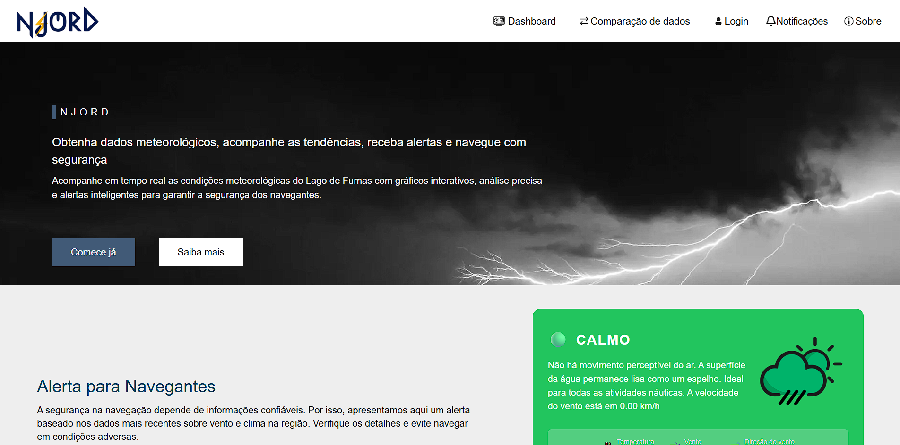
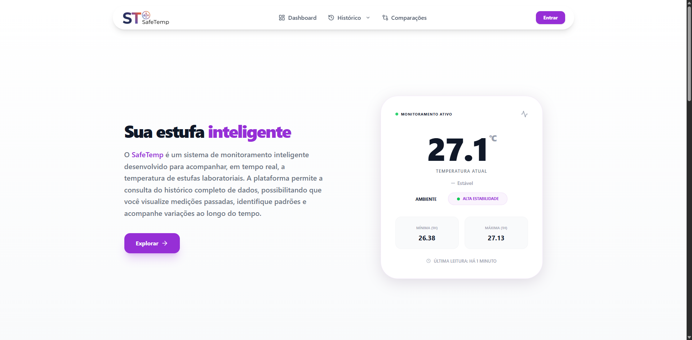
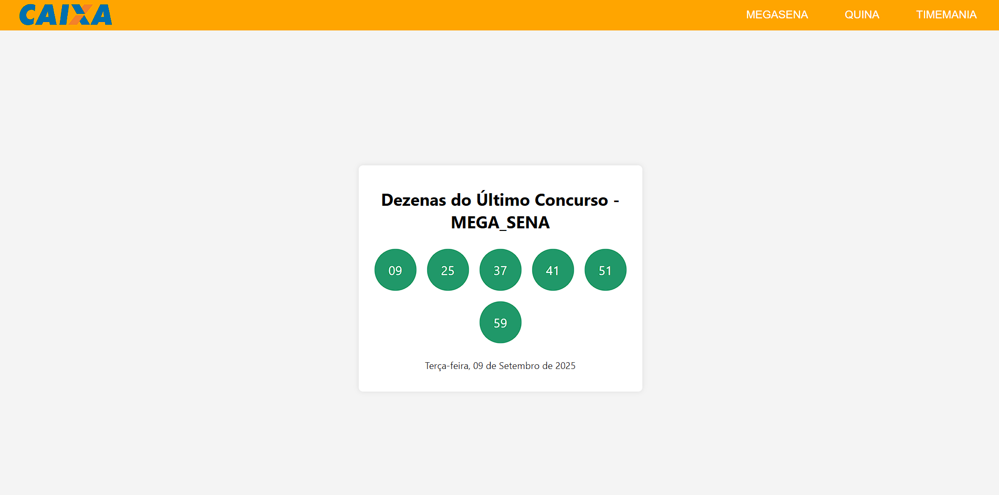
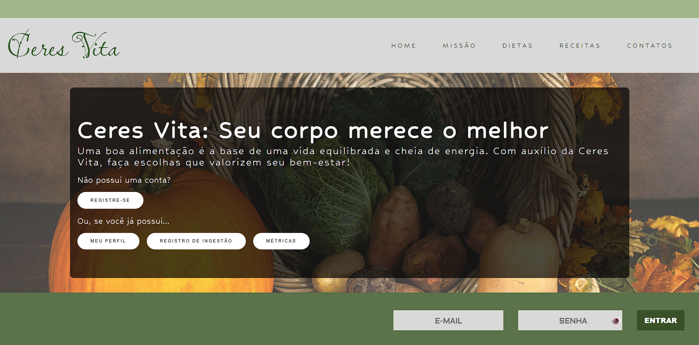
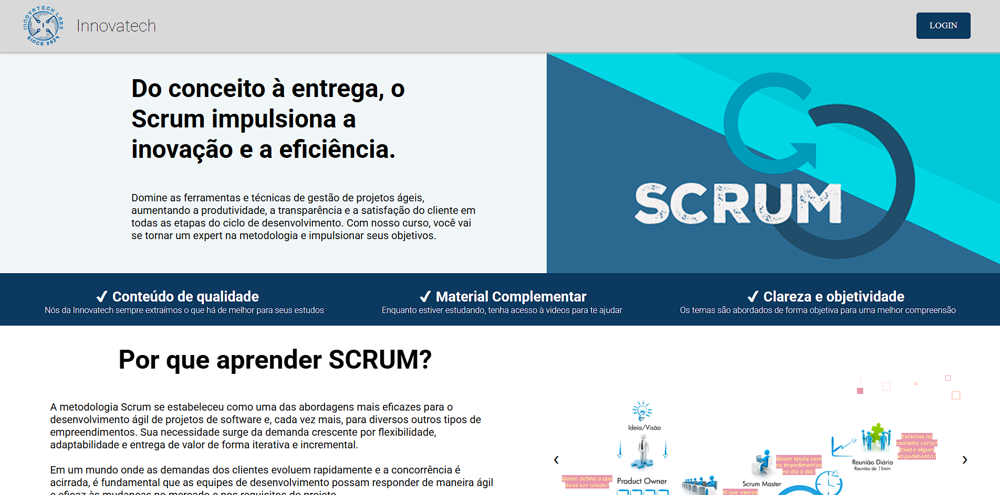

Portfólio

Njord
Aplicação construída para o projeto LabWind, do CNPq. Permite usuários acompanhar a situação do Lago de Furnas, gerar gráficos com dados capturados pelos sensores, emite alertas caso o lago esteja muito agitado e perigoso.

SafeTemp
Sistema web e mobile desenvolvido para monitorar as estufas laboratoriais da instituição FATEC - Jacareí. Seu uso é voltado para estudantes, gestores e professores que utilizam a estufa para realizar experimentos, operações e estudos no geral.

Resultados da Megasena
Web app simples que se conecta com a API da Caixa para mostrar os resultados mais recentes da Megasena, Timemania e Quina.

Ceres Vita
Uma aplicação web que oferece um sistema de controle nutricional, permitindo ao usuário registrar alimentos ingeridos, calcular calorias, e muito mais.

Website Scrum
Aplicação web desenvolvida para usuários interessados em aprenderem sobre a metodologia SCRUM, contendo diversas aulas e explicações por tópico com exemplos reais de uso da metodologia.